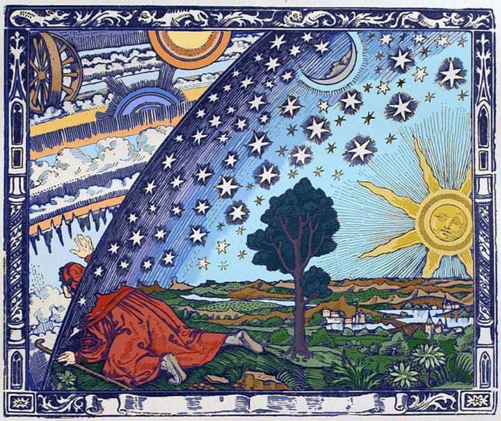

A sky-dome plotter for celestial navigation
Log where a body rises, how high it climbs at meridian passage, and where it sets. Each day becomes a path on the dome of the sky above your own horizon.
Drag sideways on the dome to turn it. Where labels pile up, zoom in with the + button, a pinch, Ctrl+scroll or a double-click; the labels spread apart, and dragging moves you around. Fit returns to the whole dome. Tap a path or a log row to select that day: the other paths turn gray and the selected one shows clock times. Tap empty sky to clear. Corkscrew joins each logged day to the next in one continuous loop, including the part spent below the horizon, so you can see the drift in declination. The Sun really makes one loop per day; logging daily shows the true spacing.
Type a city name. Add a state or country after a comma to narrow it, such as “Cambridge, MA” or “Cambridge, United Kingdom”.
Computed for your location from Meeus, Astronomical Algorithms (1998). Sources, conventions and accuracy are listed under Data sources at the end of the page. Use these numbers to check your sights, not to replace them.
A star’s rise azimuth and highest altitude depend only on its declination and your latitude, so they repeat every night. Declinations are approximate for 2026; check them against your Nautical Almanac.
For the Moon or a planet, take the declination from the daily pages of your Nautical Almanac for the date. Results use standard refraction (−0°34′) at the horizon.
Columns: body, date (YYYY-MM-DD), rise_time, rise_az, lan_time, max_alt, culm (S or N), set_time, set_az, source (observed or computed), notes. A header row is optional and blank cells are fine.
For a Google Sheet, copy the cells and paste them above, or choose File → Download → Microsoft Excel (.xlsx) and pick that file. Your columns can have any names and any order; Caelus guesses which is which, and you can correct it before importing. Files are read in your browser and never uploaded.
Measure the Sun at the same altitude once in the morning and once in the afternoon. Local apparent noon falls halfway between the two times, and the Sun’s GHA at that moment gives your longitude, as on the noon curve form.
Times are zone time for your set location. Because the Sun’s declination changes slightly between the two sights, true noon can differ from the midpoint by a few seconds, more near the equinoxes. Give Ho (corrected for index error, height of eye and refraction) to get latitude as well.
| Plot | Body | Date | Rise | Highest point | Set | Source |
|---|
Computed Sun and Moon values are calculated in your browser with the algorithms in Jean Meeus, Astronomical Algorithms, 2nd ed. (Richmond, VA: Willmann-Bell, 1998), the standard reference text for positional astronomy calculations. The Sun uses chapter 25 (the method also used by the NOAA Solar Calculator). The Moon uses chapter 47, which is based on the ELP-2000/82 lunar theory of M. Chapront-Touzé and J. Chapront (Bureau des Longitudes, Paris); only its largest periodic terms are included. Sidereal time follows chapter 12, and rising, setting and transit follow chapter 15. Against Meeus’s worked Example 47.a, the computed Moon declination agrees within 0.01°.
Conventions: Sun altitude is the center at meridian passage; Sun rise and set are when the upper limb touches a sea horizon (−0°50′). Moon altitude is topocentric (as seen from your location, after parallax, before refraction); Moon rise and set use h₀ = 0.7275 × HP − 0°34′. Expect about ±0.05° in altitude and azimuth and ±2 minutes in time. Star declinations in the catalog are approximate.
Header image: the Flammarion engraving, from Camille Flammarion, L’atmosphère: météorologie populaire (Paris, 1888), public domain. The colored version is commonly credited to Hugo Heikenwaelder (1998, CC BY-SA).
City coordinates and time zones come from the GeoNames geographical database (geonames.org, CC BY 4.0), covering cities of 100,000 people or more and U.S. cities of 50,000 or more.
Excel and Google Sheets files are read in your browser with the open-source SheetJS library (Apache 2.0).
The authoritative values for navigation are in The Nautical Almanac, prepared jointly by HM Nautical Almanac Office (UK) and the U.S. Naval Observatory from high-precision JPL ephemerides; commercial editions reprint the same data. Use your almanac for sight reduction.